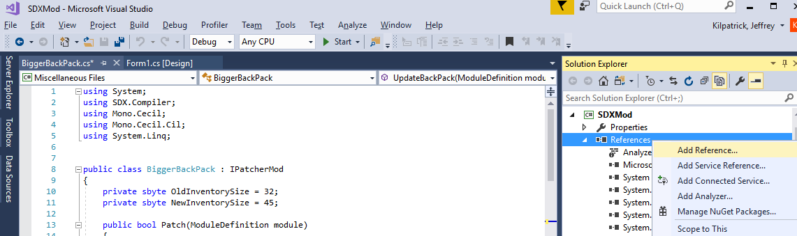
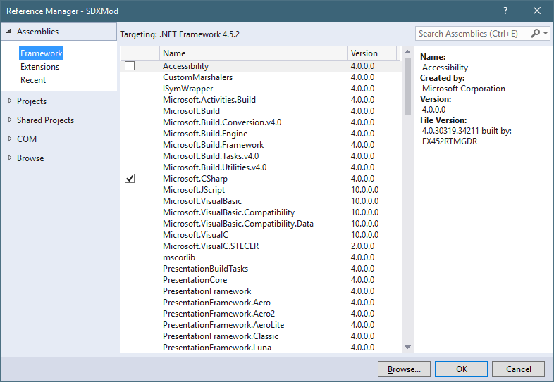
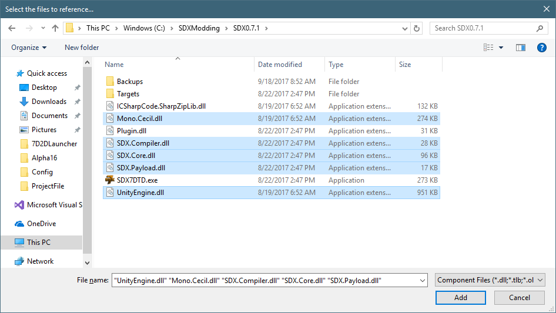
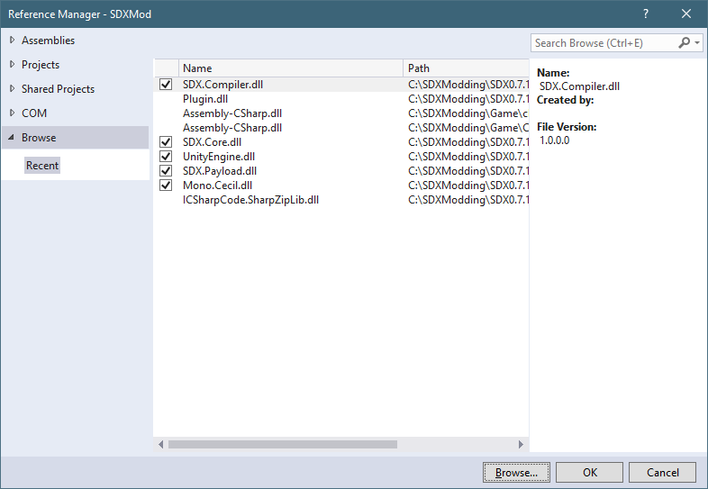

Under the SDMod, in the Solution Explorer, right click on the References and select "Add Reference..."

This will open the Reference Manager

Click on the Browse button, and navigate to your SDX Folder.

Multi-select the above DLLs, and click on "Add"

You may also add a reference to the Assembly-CSharp.dll by following the same steps, but navigating to your game folder instead.
Created with the Personal Edition of HelpNDoc: Create help files for the Qt Help Framework